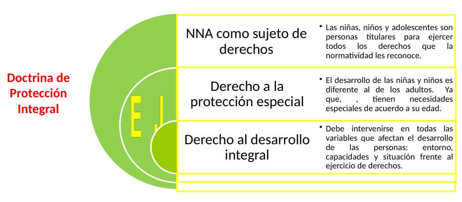

Convención sobre los Derechos del NIño
La Convención sobre los Derechos del Niño de la ONU es un tratado internacional adoptado en 1989 que establece los derechos humanos fundamentales de todos los niños y adolescentes menores de 18 años. Reconoce que los niños y adolescentes tienen derechos específicos que deben ser protegidos y promovidos, incluyendo el derecho a la salud, la educación, la protección contra la violencia y la discriminación, y el derecho a participar en decisiones que les afecten. Esta convención es crucial porque asegura que los derechos de los adolescentes sean respetados y garantizados en todo el mundo.

Es independiente de tu color, sexo, idioma, nacionalidad, origen, religión, discapacidad, etc.
Según la convención,
Los adolescentes tienen derecho a:
A la protección contra el abuso y la discriminación
- No ser discriminados por ser diferentes
- Tener a quien recurrir en casos de maltrato
- Derecho a integrarse en un ambiente digno

A expresarse libremente y el acceso a la información
- Tener una cultura, idioma y religión
- Tener sus intereses tomados en cuenta
- Pedir y difundir información libremente

A la identidad y familia
- Tener un nombre y una nacionalidad
- Crecer sanos, física, mental y espiritualmente
- La vida, el desarrollo, la participación
- Tener padres que cumplen con sus deberes y derechos
A la educación
- Aprender, desarrollar su personalidad y habilidades
- Poder trabjar sus capacidades intelectuales, físicas y sociales
- Recibir educación y tener acceso a la enseñanza secundaria y primaria
A una vida segura y sana
- Tener una vida digna y plena
- Descansar, jugar y practicar deportes
- Participar activamente en la vida cultural de su comunidad
- Recreamiento, descansar, jugar y practicar deportes
A la atención especial en caso de estar impedidos
- Derecho a servicios de rehabilitación, la educación y capacitación
- Derecho a un trato especial en caso de privación de la libertad
- Derecho a recibir ajustes razonables para garantizar la accesibilidad
Derecho a la Salud
- Disfrutar del más alto nivel posible de salud
- Recibir una atención sanitaria adecuada
- Beber agua potable, no contaminada y segura
- Ser informados sobre cuidados médicos (bienestar, nutrición, higiene, prevención)
Protección contra la explotación
- No realizar trabajo que perjudique su desarrollo o salud
- Protección contra la prostitución y otras prácticas sexuales ilegales
- No aparecer en espectáculos o materiales inapropiados
La adolescencia es el momento para desarrollar los sentimientos de amistad y generosidad y tu comprensión de tu carácter.
En el Perú
Los derechos de los adolescentes en el Perú son fundamentales para asegurar su bienestar y desarrollo integral. Según la Convención sobre los Derechos del Niño y la legislación peruana, los adolescentes tienen derecho a la salud, educación, protección contra cualquier forma de discriminación, y a participar activamente en decisiones que les afecten. Esto incluye el derecho a ser escuchados, a la privacidad, y a recibir información adecuada sobre salud sexual y reproductiva.

Para garantizar los derechos de los niños, niñas y adolescentes, se han dado las iniciativas legislativas:
- Ley N° 30403, Ley que prohíbe el uso del castigo físico y humillante contra los niños, niñas y adolescentes y su Reglamento aprobado por el D.S N° 003-2018-MIMP
- Ley N° 30466, que fija parámetros para garantizar el interés superior del niño y su Reglamento aprobado por D.S N° 002-2018-MIMP
- Ley N° 30797, norma que promueve la educación inclusiva, garantizando el enfoque inclusivo en la educación en todas sus modalidades, incorporando al profesional de psicología como integrante de la comunidad educativa.
- Ley N° 30862, norma que busca prevenir, sancionar y erradicar toda forma de violencia contra las mujeres en sus diferentes ciclos de vida.
¿Sabías que...
Existe un documento llamado "Ser adolescente en el Perú" que busca entender mejor la experiencia de los adolescentes peruanos? Este proyecto, realizado por la Pontificia Universidad Católica del Perú con el apoyo de UNICEF, busca llenar el vacío en la investigación sobre la adolescencia en el país.

El código de Niños y Adolescentes
El Código de los Niños y Adolescentes en Perú, aprobado por la Ley Nº 27337, establece un marco legal para la protección integral de los derechos de los niños y adolescentes. Este código regula y contempla las disposiciones para garantizar su implementación efectiva

Protección Integral de las Niñas, Niños y Adolescentes
El Ministerio de la Mujer y Poblaciones Vulnerables indica que "Se debe reconocer a las niñas, niños y adolescentes como sujetos de derechos (es decir titulares de derechos y deberes), se debe prevenir la amenaza o vulneración de los mismos y asegurar el restablecimiento inmediato en aplicación del principio del interés superior"
Estadisticas de los Adolescentes
Esta gráfica representa la evolución de la población adolescente en Perú desde 1995 hasta 2024, dividida por grupos de edad de 10 a 17 años. Se observa un crecimiento inicial significativo en la mayoría de los grupos de edad, seguido de una estabilización y, en algunos casos, ligeros descensos hacia los años más recientes. Base de datos: (Instituto Nacional de Estadística e Informática)
Casos donde los derechos no se han respetado
Trabajo Infantil
En muchas áreas rurales de Perú, el trabajo infantil sigue siendo un problema significativo. A pesar de las leyes que prohíben el trabajo infantil, muchos adolescentes se ven obligados a trabajar en condiciones peligrosas y agotadoras, lo cual viola sus derechos a la educación y a un entorno seguro.

Acceso Limitado a la Educación
En comunidades indígenas/rurales, los adolescentes a menudo enfrentan barreras significativas para acceder a la educación de calidad. Esto incluye falta de infraestructura escolar, maestros calificados y materiales educativos. La discriminación y el racismo también juegan un papel en la negación de oportunidades educativas igualitarias.

Violencia y Abuso
Los adolescentes en Perú, especialmente las niñas, enfrentan altos niveles de violencia doméstica, abuso sexual y explotación. La respuesta institucional a estos problemas a menudo es insuficiente, y muchas veces los casos no se investigan adecuadamente ni se brinda el apoyo necesario a las víctimas.

Salud Sexual y Reproductiva
La falta de acceso a información y servicios de salud sexual y reproductiva es otro problema significativo en el Perú. Esto incluye la falta de educación sobre los métodos anticonceptivos y la negación de servicios de aborto seguro, lo cual puede poner en riesgo la vida y el bienestar de las adolescentes.
:quality(70)/cloudfront-us-east-1.images.arcpublishing.com/gruponacion/B4TR33TWQBFRBN6DY6LE4ZKX7E.JPG)